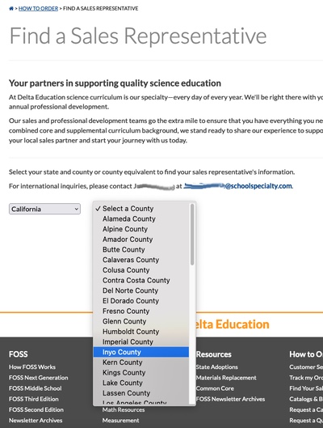
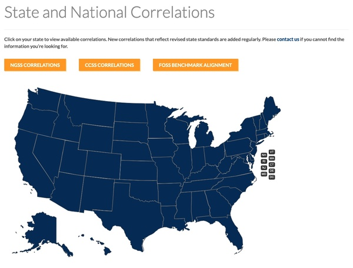
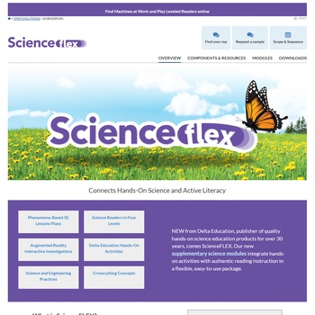
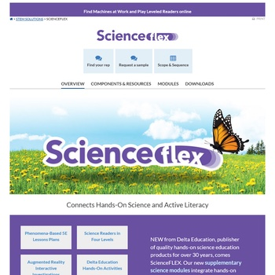
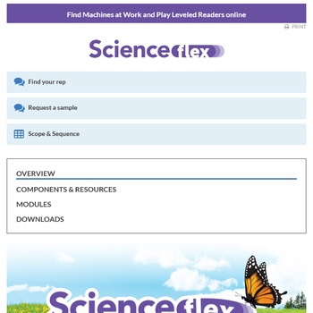
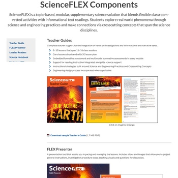
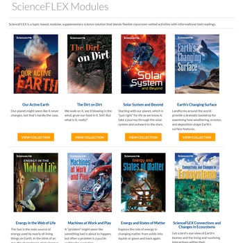
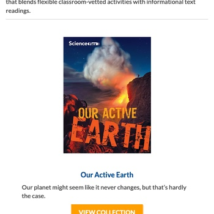

Delta Education
2015-2022 | HTML, CSS, Kentico, JavaScript
Much of my time at School Specialty in 2015 was taken up by helping to launch a new version of the Delta Education website. Unlike the previous version, this version was powered by the Kentico content management system. Much of my work that year consisted of manually migrating content from the old site and setting up pages. This included pages for curriculum, program modules, products, resources, and more. I also "imported" articles from nearly fifty editions of the FOSS newsletter, going back as far as 1996.
The original site design was by someone else, while an outside agency did the development and continued to do much of the "heavy" work on it over the next several years. My focus was more on content, and my work consisted of:
- Maintaining existing pages
- Building new pages and sections as needed, many of which required significant CSS work
- Adding new products as needed, including all relevant information such as dimensions, weight, quantity per package, price per unit, etc.
- Preparing and uploading downloadable content (such as PDFs and Microsoft Word documents)
- Resizing and optimizing images to be added to pages and product entries
In the last few years, I began making changes to some of the page templates as needed, and eventually took over the main CSS files. Unfortunately, this version of the site was retired in December, 2022, replaced by a section of School Specialty's new ecommerce website, which I have had no involvement in.
Specific Projects
Clicking or tapping on each image will bring up a larger screenshot of the entire page.
Find a Sales Representative
Frustrated by how difficult it was to update an imagemap whenever sales territories changed, I conceptualized a new "Find a Sales Representative" tool that replaced the imagemap with drop-down selectors and database tables. It was built from my notes by the outside agency that did much of the "heavy" work on the site. The company's current site doesn't use the dropdown, but it's still available via the Wayback Machine, albeit not entirely functional.
{kind=link}

Find-a-rep page showing dropdown menus.
Click image for larger version.
Correlations Maps and State Adoptions Map
I built a map-based page to show correlations of FOSS curriculum to state standards for all fifty US states and the District of Columbia. I also built a similar page that showed which states had official FOSS adoptions. The current FOSS marketing site doesn't use the version I built, but you can see the original via the Wayback Machine.
{kind=link}

Correlations Map page. Click image for larger version.
ScienceFLEX
The ScienceFLEX section is a project that I'm particularly proud of. While the designs of the Overview and Components & Resources pages were by someone else, the HTML and CSS was all me. The Modules page used the then-standard "Product Collection List" template, which I would update a few years later, while the Downloads page used the same layout I was using on other downloads pages on the site. This version of the ScienceFLEX pages can be viewed via the Wayback Machine.
{kind=link}

ScienceFLEX homepage on desktop
{kind=link}

ScienceFLEX homepage on a tablet
{kind=link}

ScienceFLEX homepage on a phone
{kind=link}

ScienceFLEX Components page on desktop
Product Collection Template
This template was used to show the modules (also sometimes called collections) available within each family of products (FOSS Next Generation, FOSS 3rd Edition, ScienceFLEX, etc). It originally used floats to arrange the items; as we added descriptions to each module, the different lengths would result in the orange "View Collection" buttons not being lined up. I eventually got tired of seeing that and updated the template to use Flexbox.
{kind=link}

ScienceFLEX modules page on desktop
{kind=link}

ScienceFLEX modules page on a phone